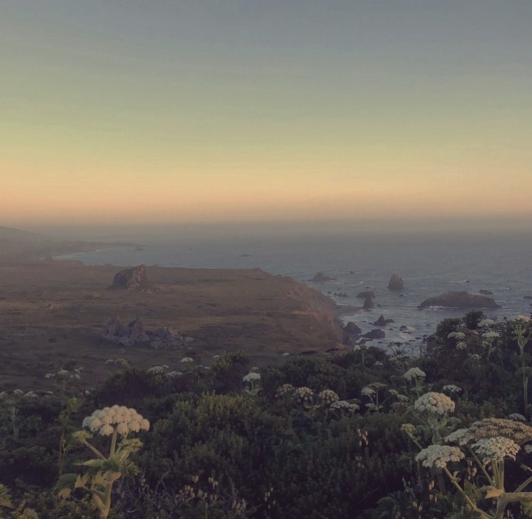
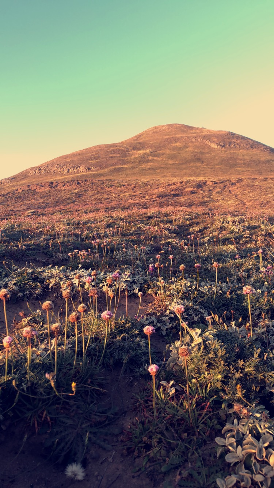
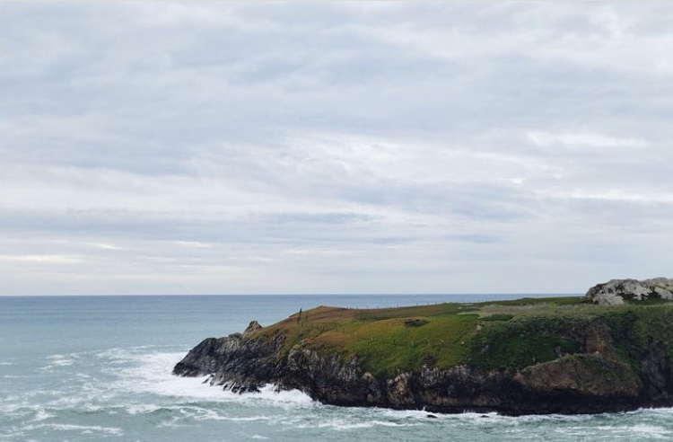
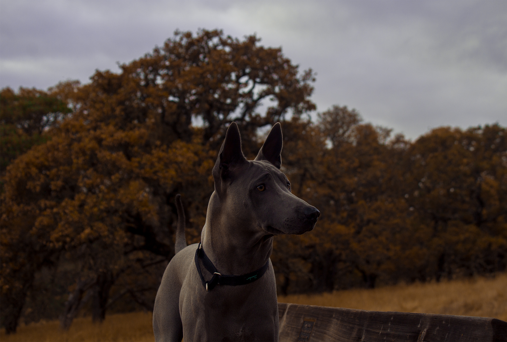
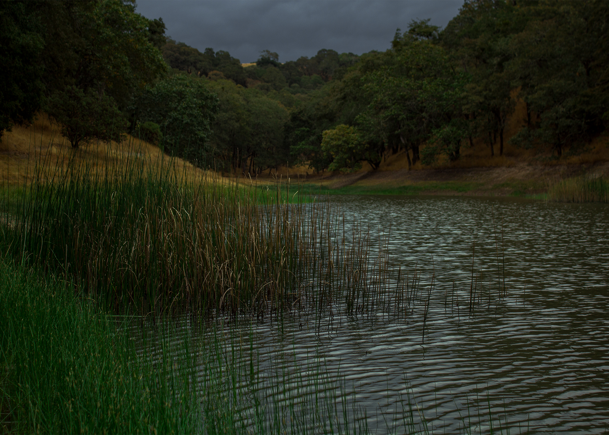
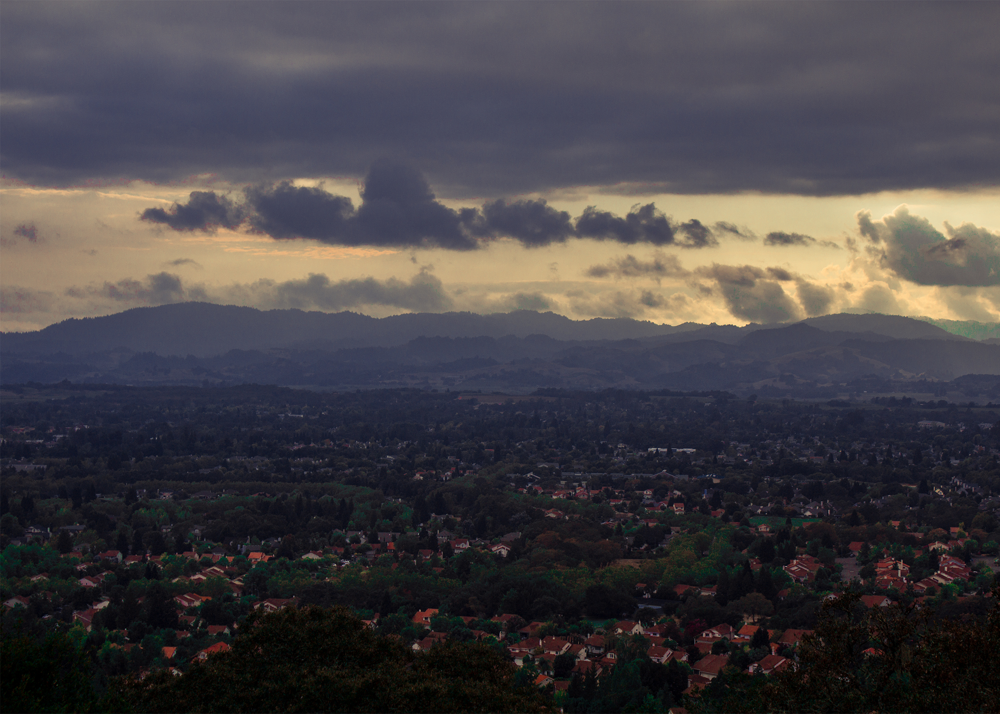
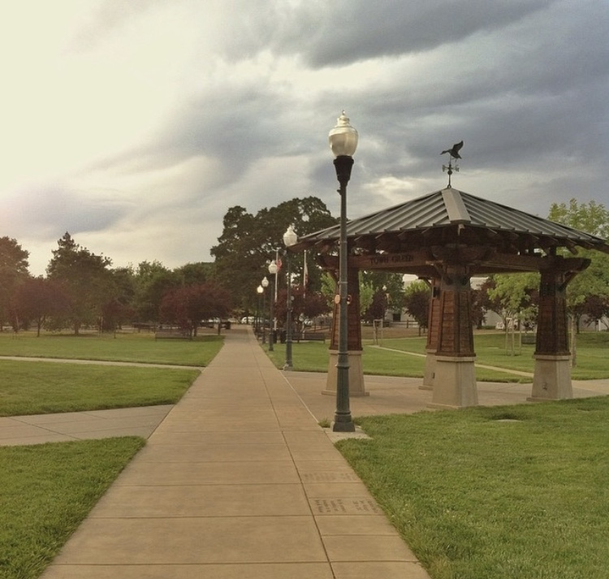

Sonoma County is in Northern California. It's known for the Sonoma Valley wine region, as well as other notable winemaking areas such as the Dry Creek and Alexander valleys. Its population is is estimated to be around 483,878. It was Incorporated February 18, 1850 and named for the city of Sonoma. SonomaCounty.ca.gov
 The remote coastline of Sonoma county provides many great places to visit but my favorite place would be the top of Goat Rock during sunrise or sunset. Its a fairly steep hike up the hill but its a pretty short track overall. 
Duncans landing is known as the most dangerous beach in sonoma county due to its unpredictable surf but the view is simply killer.   
Foothills Regional Park is a perfect place to connect with nature and relax. Nearly all the 10 or so trails at Foothill are short and easy. Foothill preserves a classic gently rolling north bay landscape, but Foothill is augmented with 3 man-made ponds (created in the 60's, long before the land became a park). Although you can't swim here, the park district does permit fishing. Foothill Regional Park website
Also referred to as downtown Windsor, The town green is always filled with residents and tourists enjoying the restaurants and park provided. During the summer Windsor will host concerts and movie nights every Tuesday and Thursday night at the green. Summer Nights on The Green